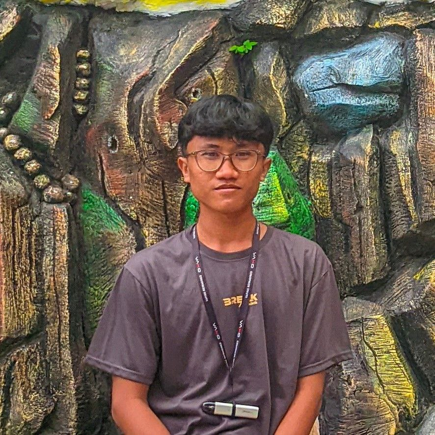
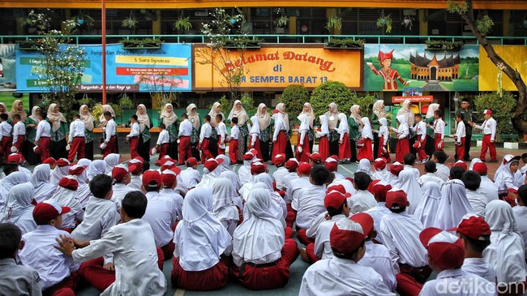
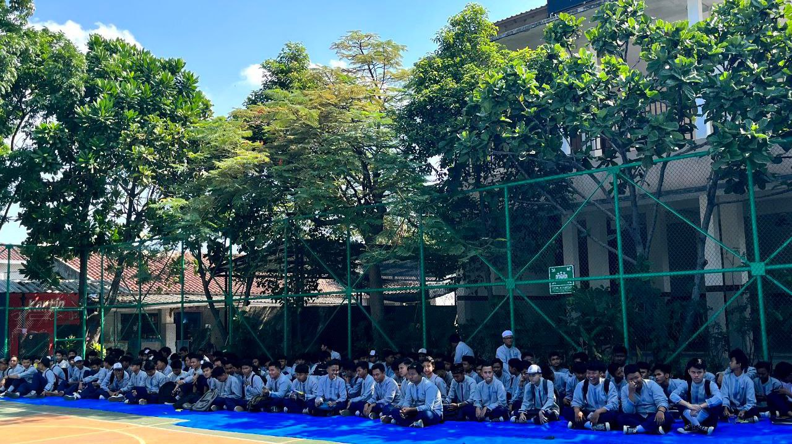
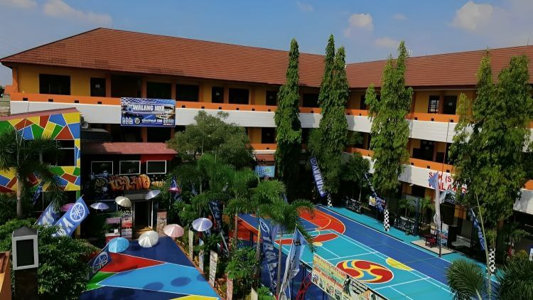

Halo, Saya
Muhammad Dimas Ramadhan
Dan saya seorang |
Saya lulusan SMK dengan kejuruan Otomotif, dengan orang yang memiliki ketertarikan pada dunia programming, UI/UX Design, dan banyak lagi....

Saya lulusan SMK dengan kejuruan Otomotif, dengan orang yang memiliki ketertarikan pada dunia programming, UI/UX Design, dan banyak lagi....

Saya adalah seorang siswa SMK yang memiliki ketertarikan dalam dunia programming, UI/UX Design, dan banyak lagi. Saya selalu berusaha untuk belajar dan mengembangkan keterampilan saya di bidang ini. Saya percaya bahwa dengan kerja keras dan dedikasi, saya dapat mencapai tujuan saya dan memberikan kontribusi positif di dunia teknologi.

2014 - 2020
Sekolah yang saya mulai dari awal pendidikan saya. Sekolah ini adalah tempat saya belajar banyak hal tentang dunia pendidikan. Disinilah awal mula saya bisa membaca dan menulis. Saya mendapatkan teman yang dapat bertahan sampai saat ini dan saya sangat bersyukur bisa bersekolah di sini. Sekolah ini adalah tempat yang sangat berkesan bagi saya.
2020 - 2023
Saya melanjutkan jenjang SMP di sekolah ini. Mulai dari sinilah saya sudah tertarik dengan Software berkat teman saya yang mengajak saya untuk belajar tentang Software. Sekolah ini adalah tempat saya belajar banyak hal dan mendapatkan banyak teman.


2023 - 2026
Disinilah tempat akhir saya pada jenjang pendidikan. Saya mengambil jurusan Otomotif di sekolah ini. Sekolah ini adalah tempat saya belajar banyak hal tentang Otomotif. Saya juga mendapatkan banyak teman di sekolah ini. Sekolah ini adalah tempat yang sangat berkesan bagi saya.
Saya memiliki skill dan kemampuan dalam bidang pemrograman. Walau saya belum memiliki skill yang cukup baik, tetapi saya akan terus belajar dan berusaha untuk meningkatkan skill saya di bidang ini.
Saya memiliki sedikit keahlian dalam bidang Software. Saya dapat mengcustomize Software sesuai dengan keinginan saya. Tetapi skill saya dalam bidang ini masih sangat kurang. Saya akan terus belajar dan berusaha untuk meningkatkan skill saya di bidang ini.
Saya memiliki sedikit keahlian juga dalam bidang Hardware. Saya dapat mengganti Hardware yang rusak dengan Hardware yang baru. Tetapi skill saya dalam bidang ini masih sangat kurang. Saya akan terus belajar dan berusaha untuk meningkatkan skill saya di bidang ini.
Memiliki pengalaman dalam menangani keluhan pelanggan, melakukan service berkala, pengecekan kendaraan, serta pergantian sparepart mobil.
Memiliki kemampuan bekerja sama dalam tim, cepat beradaptasi, serta mampu memahami dan menyelesaikan permasalahan.
Terbiasa mengelola waktu dengan baik dalam menyelesaikan tugas, menjaga konsistensi pekerjaan, dan menentukan prioritas secara efisien.
Pengalaman dan kemampuan yang saya miliki dari berbagai bidang.
Mekanik Mobil
• Bertanggung jawab dalam melakukan perawatan dan perbaikan komponen kendaraan sesuai dengan instruksi kerja.
• Membangun komunikasi yang baik dan ramah dengan pelanggan saat menjelaskan kondisi kendaraan dan layanan yang di berikan.
Waiter
• Menjaga standar kebersihan area meja, alat makan, dan lingkungan restoran sesuai prosedur sanitasi restaurant.
• Bekerja secara efektif dalam tim untuk menangani operasional saat jam sibuk (rush hour) guna memastikan makanan tersaji tepat waktu.